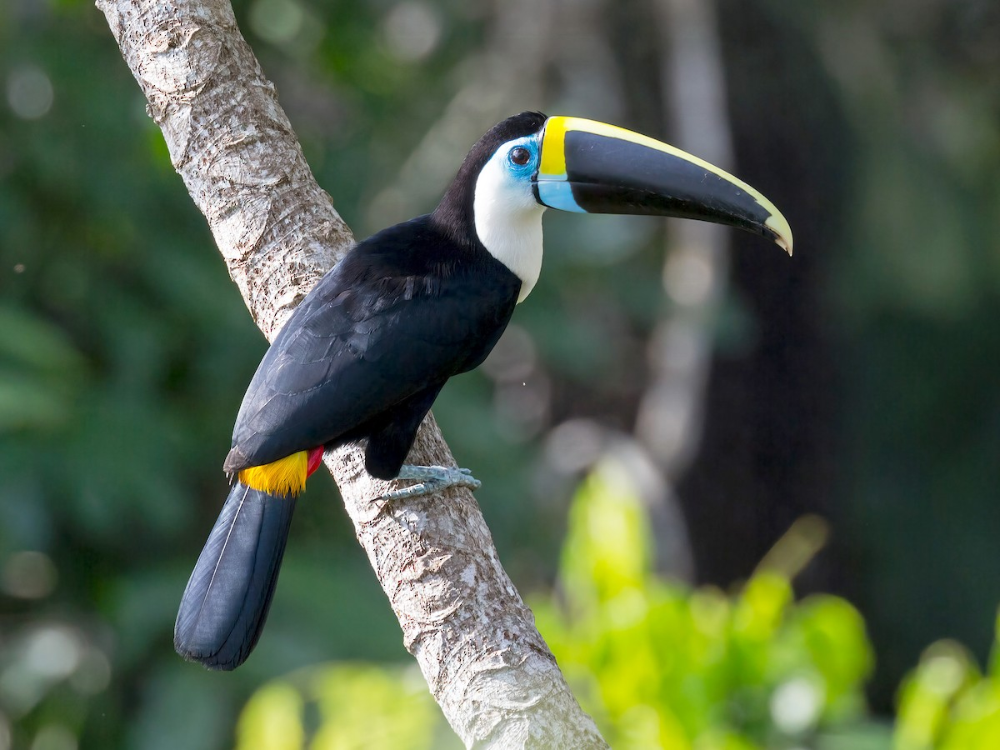

Tukan kuşu (Ramphastidae), Orta ve Güney Amerika’nın tropikal ormanlarında yaşayan, iri ve renkli gagasıyla tanınan en dikkat çekici kuş türlerinden biridir. Ortalama 30–60 cm uzunluğa ulaşabilen bu kuşlar, siyah gövdeleri, beyaz göğüsleri ve turuncu, sarı, yeşil ile kırmızı tonlarını taşıyan dev gagalarıyla doğanın en göz alıcı canlılarından sayılır. Gagaları yalnızca görsel ihtişam için değil, aynı zamanda meyve, böcek ve küçük canlıları yakalamada işlevseldir. Sosyal yapılarıyla küçük gruplar halinde yaşayan tukanlar, tropikal ormanların yüksek ağaçlarında yuvalanır ve çevik hareketleriyle dikkat çeker. Doğal ortamlarında meyve ağırlıklı beslenirler, ancak böcek ve küçük sürüngenleri de tüketebilirler. Gösterişli görünümleri nedeniyle kültürel sembol hâline gelen tukanlar, doğru bakım koşullarında uzun yıllar yaşayabilir.